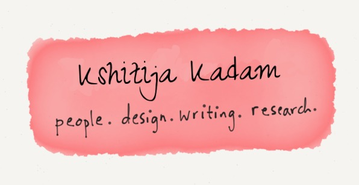
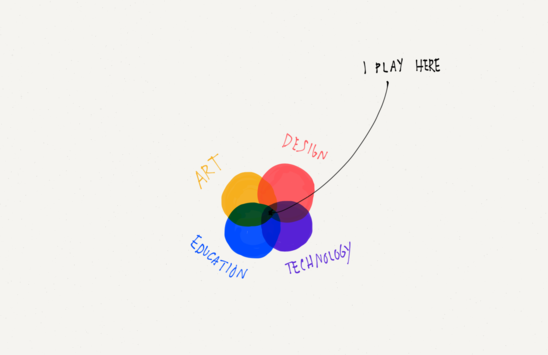
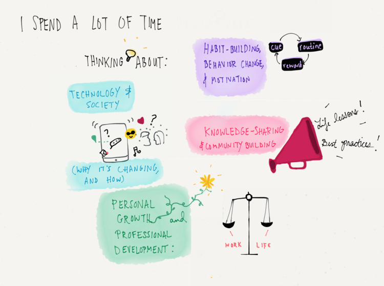
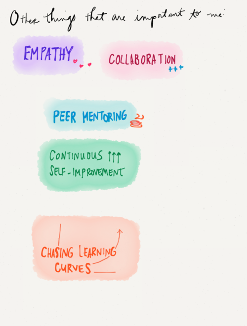
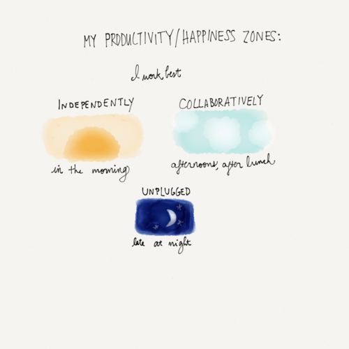
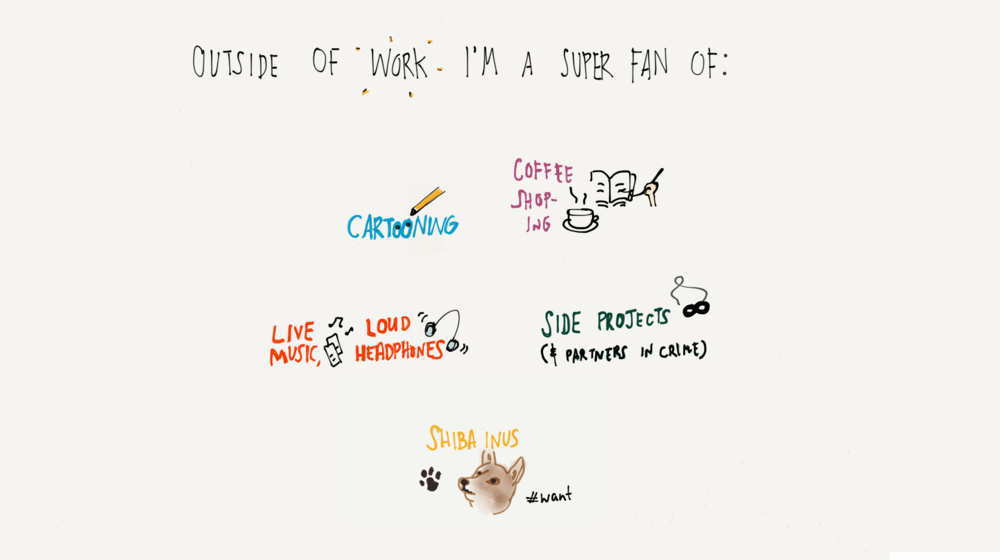

software engineer · creative at heart
I'm a software engineer who finds home at the overlap of technology, design, and people. I build things that work — and try to make them beautiful while I'm at it.
By day I write code. By choice, I sketch, read, ask too many questions, and think about how people and technology grow together.


Not deadlines (well, sometimes). Mostly just big questions about how people learn, how technology shapes society, and how we can grow — together and individually.
Beyond the code and the craft, these are the things I carry into every room I walk into and every project I touch.



Some fun, some real — all honest.
Coffee shop in the morning, sketchbook open, headphones on — then absolutely nothing productive in the evening. Perfect.
Whatever prettier decides. I have made my peace.
Illustration — specifically the kind that makes complex ideas feel instantly obvious. Also, baking sourdough. Different skill, same chaos.
A children's book author-illustrator. Or a competitive crossword person. One of those.
The best technology is the kind you don't notice because it just works. We celebrate flashy — we should celebrate invisible more.